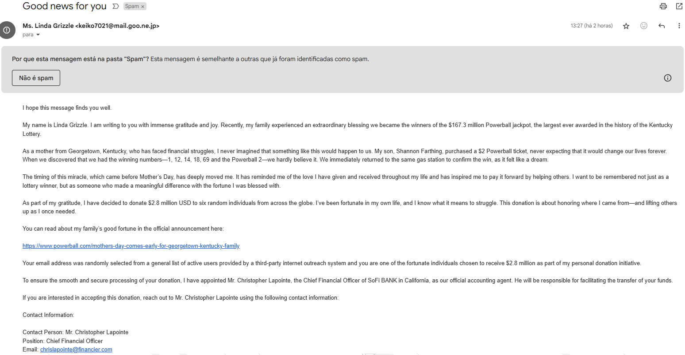

Situação de Aprendizado

Soluções para ameaças cibernéticas
Phishing
Phishing é um tipo de crime cibernético onde os criminosos tentam obter informações confidenciais, como senhas e dados de cartões de crédito, fingindo ser uma entidade confiável.
Estes ataques ocorrem por meio de e-mails, mensagens de texto ou sites falsos, induzindo as pessoas a compartilharem dados sensíveis, como nome, endereço, documentos, senhas, contas bancárias, etc.
- Phishing por e-mail: Golpe por email
- Man-in-the-middle: Interceptação de dados
- Pharming: Redirecionamento malicioso
Exemplo de phishing por e-mail
Ransomware
Ransomware é um tipo de malware que sequestra o computador da vítima, bloqueando o acesso a arquivos ou dispositivos e exigindo um pagamento, geralmente em criptomoedas, para restaurar o acesso.
Este software malicioso é utilizado para extorsão, criptografando dados digitais e mantendo-os como reféns até que um resgate seja pago.
Exemplo de Ransomware

Soluções para vulnerabilidades
Senhas fracas
Senhas fracas, como “123456” ou “admin”, são um convite aberto para invasores. Para garantir proteção real, é fundamental criar senhas fortes e únicas.
Exemplos de senhas fortes:
- Zdhkqjbu83
- 74Xmbgdapw
- Bmukwes3901!
- lw;62v74y

Software desatualizado
Outdated Software, ou software desatualizado, é um termo utilizado para descrever programas que não foram atualizados. Manter softwares atualizados é fundamental para garantir segurança, desempenho e compatibilidade.

Soluções para engenharia social
Pretexting
Pretexting é o uso de uma história fabricada para enganar vítimas e obter informações confidenciais ou causar danos.
Exemplos de pretexting:
- Golpes de atualização de conta
- Golpes de comprometimento de e-mail comercial
- Golpes de criptomoedas
- Golpes de faturas
- Golpes do IR e do governo
- Golpes de ofertas de emprego
- Golpes sociais
- Golpes de scareware

Baiting
Esses ataques envolvem enganar a vítima com uma isca — física ou digital — para que ela baixe malware. Um exemplo é um pen drive deixado propositalmente em locais públicos.
Intervenções e Respostas a Incidentes
Violação de dados
Uma violação de dados ocorre quando partes não autorizadas acessam informações sensíveis. Pode ser causada por erro humano, agentes internos maliciosos ou hackers externos.